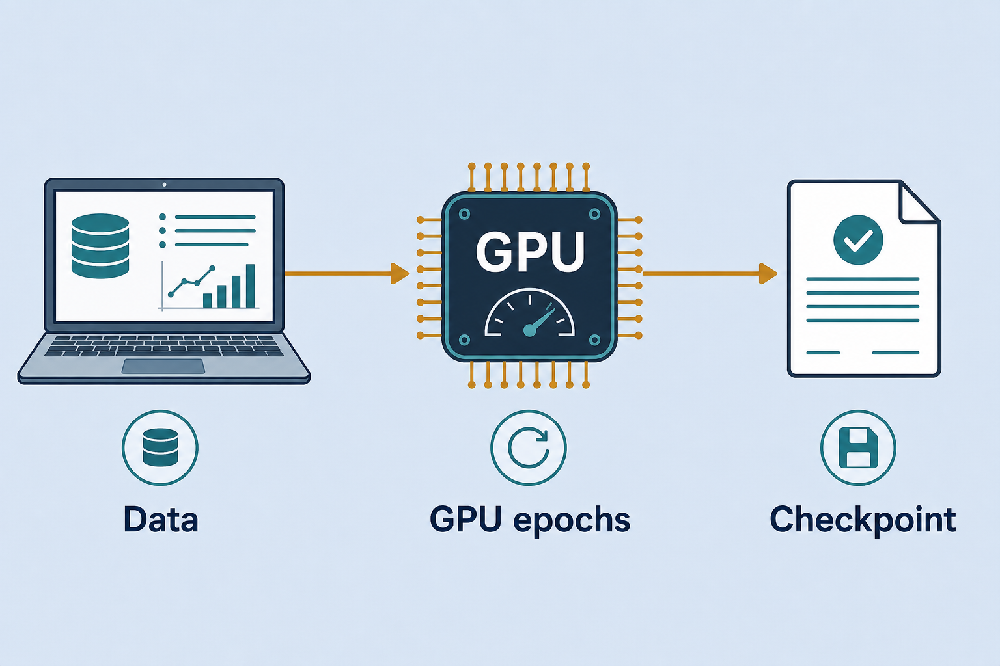

Train · PyTorch / TensorFlow · GPU
HF/Kaggle datasets, PyTorch and TensorFlow, GPU notebooks, train → inference.
Train · PyTorch / TensorFlow · GPU Notebooks
Where models actually learn: data from Hugging Face / Kaggle, code in PyTorch or TensorFlow, many epochs on a GPU (Colab/cloud) until good enough, then export weights. Everyday metaphor: the gym (GPU) is where muscles (weights) grow; the phone app (browser demo) only shows the flex.
Why it matters
Lab demos illustrate inference only. To get a model you can plug in, you must train somewhere with a GPU. This note collects the practical stack — which tools, where data lives, where to run — so you do not rebuild the checklist every time.
Key ideas
- Two layers of work:
| Layer | Job | Output |
|---|---|---|
| Training | HF/Kaggle → notebook/endpoint → many GPU epochs | checkpoint |
| Inference | load model → predict | label / action |
See 06-train-infer.md for the two-phase mental model. Training owns optimizer state, data pipelines, and eval loops; inference owns forward pass only. Mixing them in one mental bucket is why people try to “train in the browser.”
- Stack used in practice:
- PyTorch — flexible; most training code in the lab (pytorch-training.md). Explicit
loss.backward()/optimizer.step()makes debugging shapes and gradients easier. - TensorFlow — softmax regression and Embedding Projector for visualizing vectors (tensorflow-training.md). Keras
fit()is fine for small classifiers; use TF when the notebook or Projector path already exists. - Data: Hugging Face Datasets and Kaggle — pre-labeled, ready to download. Prefer a Hub card with documented splits over scraping your own labels for teaching demos.
- GPU online: Google Colab / Kaggle / cloud notebooks — train to ~95%+ accuracy when the task allows, then export. Free tiers are enough for MiniLM / small CNN; large full fine-tunes need paid GPU or LoRA.
- Short workflow (with concrete gates):
pick dataset (HF/Kaggle) → write notebook (PyTorch/TF) → train on GPU
→ watch train + val loss/accuracy every epoch → early-stop or pick best val ckpt
→ export checkpoint (state_dict / SavedModel / ONNX) → plug into demo (inference)
Gate before GPU: one CPU batch that prints shapes and a finite loss. Gate before export: val metrics stable for 2–3 epochs and a confusion matrix that isn’t “always majority class.”
- In AI Journey: browser demos show the flow; they do not replace GPU training. Train in a notebook / Kaggle / Colab, then embed weights in UI demos (self-driving-car, sentiment…). The demo’s job is latency and UX; the notebook’s job is learning.
- What “good enough” means: for teaching demos, stable val accuracy and a sane confusion matrix beat chasing 0.1% leaderboard gains. Ship the best validation checkpoint, not the last epoch. Log seed, dataset revision, and learning rate so you can reproduce the export.
- Hardware reality check: batch size is limited by VRAM; if you OOM, cut batch size, use gradient accumulation, or switch to a smaller backbone / LoRA. Mixed precision (
torch.cuda.amp/ TF mixed precision) often doubles effective throughput with little accuracy cost on modern GPUs.
Worked example (intuition)
Sentiment three-class task (neg / neu / pos):
1. Data: load_dataset(...) from the Hub (or a Kaggle CSV with a clean label column). Keep an 80/10/10 train/val/test split; do not peek at test while tuning.
2. Model: fine-tune MiniLM or a small AutoModelForSequenceClassification head — not a 70B chat model. Freeze the encoder for a few epochs if labels are scarce, then unfreeze lightly.
3. Train: Kaggle/Colab GPU, 3–5 epochs, AdamW, batch 16–32, watch val accuracy + F1. Save best.pt whenever val improves.
4. Export: torch.save(model.state_dict(), ...) (or ONNX if the demo needs it). Copy the file into the sentiment demo assets.
5. Infer: demo loads weights once at startup; each click is a forward pass only. Users never wait for training — you already paid that cost once in the notebook.
If val F1 stalls below ~0.7 while train accuracy soars, stop: you are overfitting or the label set is noisy — fix data before burning more GPU hours.
Common pitfalls
- Training in the browser demo — demos are for inference; don’t expect on-device epoch loops.
- No validation split — you ship an overfit checkpoint.
- Forgetting to export — notebook session ends, weights gone.
- GPU quota waste — debug shapes on CPU/small data first.
- Exporting the last epoch — prefer best-val; last epoch often overfits.
Illustrations



Deeper dive
- VRAM budget before you click Run: estimate roughly
params × dtype bytes × (activations + optimizer states). Adam stores ~2× param memory on top of weights. If a full fine-tune of BERT-base OOMs at batch 32, try batch 8 + grad accumulation 4, or LoRA adapters that train <1% of parameters. - Checkpoint hygiene: save
{epoch, val_metric, state_dict, tokenizer_name, seed}. Pin the Hub dataset revision (revision=...) so “same notebook next month” is actually the same data. Prefersafetensorswhen sharing outside a trusted machine. - Train/val leakage is silent: shuffle after splitting by document/user id when reviews or sessions can collide. Stratify multi-class splits so rare labels appear in val. A confusion matrix that looks “too perfect” is a smell.
- When to stop: early stopping on val loss with patience 2–3; or a fixed epoch budget for demos once val plateaus. Learning-rate schedules (warmup + cosine) matter more on full fine-tunes than on tiny heads.
- Framework pick in this lab: PyTorch for anything you will debug by hand; TensorFlow/Keras when you want Embedding Projector or an existing TF notebook. Don’t dual-maintain both for one demo.
- Export targets: browser demos often want a small JSON/
state_dictor ONNX; Spaces want a Hub repo. Convert once after metrics are good — don’t retrain just to change packaging. - Colab/Kaggle gotchas: session disconnect wipes
/content— push checkpoints to Drive/Hub every N epochs. Free GPUs throttle; profile one epoch time × planned epochs before overnight runs. - Smoke-test gate (mandatory): one CPU batch printing shapes + finite loss before
.cuda()/ accelerator on. Most “GPU is broken” tickets are shape bugs discovered after burning quota. - Demo packaging budget. After metrics clear the bar, measure artifact size and cold-load time in the target demo. A great notebook checkpoint that is 2 GB fails the lab’s browser/UX constraint — distill or shrink before polish.
Decision guide
| Situation | Prefer | Avoid / why |
|---|---|---|
| Teaching demo, few labels, need a checkpoint this afternoon | Hub pretrained + 2–5 epoch fine-tune on free GPU | Training a Transformer from scratch — weeks of compute for worse results |
Debugging RuntimeError: shape mismatch | CPU, batch size 1–2, print shapes before .cuda() | Burning GPU quota on broken graphs |
| Val accuracy high, train much higher | Best-val checkpoint + more regularization / less epochs | Shipping last-epoch weights — classic overfit |
| Need vectors for Projector / softmax lab | TensorFlow path already in tensorflow-training.md | Rewriting the whole stack in PyTorch “for purity” |
| Large model, limited VRAM | LoRA / PEFT or smaller backbone | Full fine-tune of huge models on free Colab |
| Demo must load in browser quickly | Small classifier / MiniLM export | Shipping a multi-GB chat checkpoint into static HTML |

Case study
Produce weights for the lab sentiment demo (neg / neu / pos) without training in the browser.
- Inputs: Hub (or Kaggle) labeled reviews, 80/10/10 split; MiniLM sequence-classification head; Colab/Kaggle GPU session.
- Steps: CPU smoke batch → GPU fine-tune 3–5 epochs, AdamW, batch 16–32 → track val F1 + confusion matrix → save
best.pton improvement → export into demo assets → browser only runs forward passes. - Output: demo loads once at startup; clicks stay low-latency; notebook holds the reproducible train script + seed + dataset revision.
- What you'd check: val F1 not stalled while train accuracy → 99%; best-val not last-epoch; artifact size fit for the demo; GPU disabled while debugging prints.
Lab checklist
- [ ] Pick a labeled dataset and write down train/val/test sizes
- [ ] Run a 1-batch CPU smoke test (shapes + finite loss)
- [ ] Fine-tune on GPU for a few epochs while logging val metrics
- [ ] Save the best validation checkpoint (not only the final epoch)
- [ ] Export weights + label map into a demo or Hub folder
- [ ] Load the export in an inference-only path and predict on 5 held-out examples
- [ ] Record seed, LR, and dataset revision next to the checkpoint
- [ ] Estimate artifact size / load time against the demo’s constraints
Pipeline
HF/Kaggle data → notebook (PyTorch/TF) → GPU epochs → checkpoint → demo inference
Slides & demo
| Link | |
|---|---|
| Slides | slides/train-gpu |
| Related demos | self-driving-car · sentiment |
References
Related
- 06-train-infer.md — train vs infer
- pytorch-training.md, tensorflow-training.md, huggingface.md, kaggle.md
- Demo notes: self-driving-car.md, 05-demo-text.md